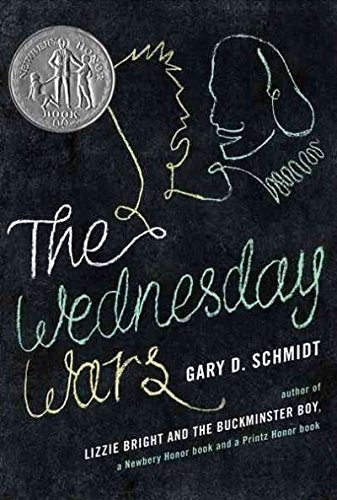

"The Wednesday Wars: A Newbery Honor Award Winner"
- Read on 2022-02-24
- Rating: ️️️️️
- Format: 🎧 (7 hours 27 minutes)
This was more fun than I thought it was going to be. I immediately purchased a copy for my son, for him to read in the next year or so. Despite being a YA novel, the book touches on a variety of topics, thanks to it taking place in 1967-1968. Holling Hoodhood, the seventh-grade protagonist, is sure his teacher hates him. Each week they spend an afternoon together, as other classmates are gone, and with the help of his teacher, he learns and grows. Light-hearted, and entertaining, this will be a great read for my son.
- Prior: Word by Word
- Next: Bolivar